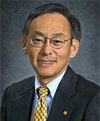
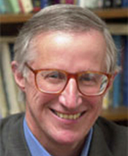

<!DOCTYPE HTML PUBLIC "-//W3C//DTD HTML 4.0 Transitional//EN">
<!-- saved from url=(0049)http://www.eia.gov/neic/speeches/speech1.html -->
<HTML><HEAD><TITLE>EIA - Energy Conferences & Presentations.</TITLE>
<META http-equiv=Content-Type content="text/html; charset=windows-1252" /><!-- ****************************************** Begin META TAGS ********************************************* -->
<META content=EIA name=agency />
<META content=general name=audience />
<META content="presentations and testimony by EIA on energy data and statistics" 
name=subject /><!-- ****************************************** End META TAGS *********************************************** -->
<link href="https://www.eia.gov/styles/eia_sitewideF.css" rel="stylesheet" type="text/css" />
<link href="conference09.css" rel="stylesheet" type="text/css" />
<script language="JavaScript" src="https://www.eia.gov/styles/eia_header.js" type="text/javascript"></script>
<script language="JavaScript" src="https://www.eia.gov/styles/eia_footer.js" type="text/javascript"></script>
<script src="videoplayer.js" type="text/javascript"></script>

<META content="MSHTML 6.00.2900.3199" name=GENERATOR />
<script type="text/JavaScript">
<!--
function MM_jumpMenu(targ,selObj,restore){ //v3.0
  eval(targ+".location='"+selObj.options[selObj.selectedIndex].value+"'");
  if (restore) selObj.selectedIndex=0;
}
//-->
</script>
<style type="text/css">
<!--
table td {
	padding-bottom: 20px;
}
.test {
}
-->
</style>

</HEAD>
<script language="javascript">
function OutlookAppt() {
      var olkApp = new ActiveXObject("Outlook.Application");
      var olkAppt = olkApp.CreateItem(1);
      /* Transfer the data */
      olkAppt.Subject = 'EIA Conference';
      olkAppt.Start = '04/07/2008';
      olkAppt.Body = 'Washington Convention Center, Washington, DC.';
      olkAppt.Display();
}
</script>
<BODY bgColor=#ffffff leftMargin=0 topMargin=0 marginheight="0" marginwidth="0"><!-- ****************************************** Begin HEADER ************************************************ -->
<DIV align=center>
<CENTER><!-- BEGIN BANNER, & SEARCH -->
<SCRIPT language=JavaScript>InsertEIAHeaderCode();</SCRIPT>
<!-- END OF SEARCH & BANNER --><!-- ****************************************** End HEADER ************************************************** -->
<TABLE cellSpacing=0 cellPadding=2 width="95%" border=0>
  <TBODY>
  <TR>
    <TD vAlign=top height=8><SPAN class=hotbox><A 
      href="../../index.html">Home</A></SPAN> <SPAN 
      class=hotbox>&gt; <a href="index.html">2009 Energy Conference</a></SPAN><SPAN class=hotboxSHD> <span class="hotbox">&gt;</span> Plenary Session</SPAN></TD>
  </TR>
  <TR>
    <TH class=SectionHead vAlign=top>
     </TH></TR>
 
  <TR>
    <TD height="213" vAlign=top>
      <TABLE border=0 cellpadding="2" cellspacing="1">
        <TBODY>
          <TR>
            <TD height=177 colspan="2" vAlign=top><a href="index.html"></a></TD>
          </TR>
          <TR>
            <TD  vAlign=top><table width="800" cellpadding="5" cellspacing="0" bgcolor="#FFFFEA" class="misctext" style="border:#999 thin solid; text-align: left;">

                
                <tr>
                  <td width="173" valign="top" style="padding-bottom: 5px;"><strong class="CategoryTitle">Plenary Session</strong></td>
                  <td width="603" valign="top" style="padding-bottom: 5px;">&nbsp;</td>
                </tr>
                <tr>
                  <td colspan="2" valign="top"style="padding-bottom: 5px;"><strong>Welcome</strong> - <a href="plenary.html#Howard">Howard Gruenspecht</a><br />
Acting Administrator, Energy Information Administration</td>
                  </tr>
                <tr>
                  <td colspan="2" valign="top" style="padding-bottom: 5px;"><strong>Keynote Address; The Energy Problem</strong> - <a  href="plenary.html#DrChu">Dr. Steven Chu</a>, Secretary of Energy</td>
                  </tr>
                <tr>
                  <td colspan="2" valign="top" style="padding-bottom: 5px;"><strong>The Economics of an Integrated World Oil Market</strong> - <a href="plenary.html#Nordhaus">William D. Nordhaus</a>, Sterling Professor of Economics, Yale University </td>
                  </tr>
                <tr>
                  <td colspan="2" valign="top" style="padding-bottom: 5px;"><strong>Energy in a Carbon-Constrained World</strong> - <a href="plenary.html#Rowe">John W. Rowe</a>, Chairman and Chief Executive Officer, Exelon Corporation </td>
                  </tr>
                <tr bgcolor="#F3f3f3">
                  <td valign="top" style="padding-bottom: 5px;">&nbsp;</td>
                  <td style="padding-bottom: 5px;"><em>Note: Concurrent sessions used a variety of presentation and round table   discussion formats.  All available presentations have been posted.</em></td>
                  </tr>
                <tr>
                  <td valign="top" style="padding-bottom: 5px;">&nbsp;</td>
                  <td align="center" class="Pagetitle" style="padding-bottom: 5px;"><strong class="CategoryTitle">Moderator and Speaker Bios and Presentations </strong></td>
                  </tr>
                <tr>
                  <td colspan="2" align="left" valign="top" style="padding-bottom: 0px;"><script language="JavaScript" type="text/javascript">
                        AC_FL_RunContent( 'codebase','http://download.macromedia.com/pub/shockwave/cabs/flash/swflash.cab#version=10,0,0,0','name','chu_2009','width','240','height','240','id','chu_2009','align','left','src','chu_2009','quality','high','bgcolor','#FFFFEA','allowscriptaccess','sameDomain','allowfullscreen','true','pluginspage','http://www.adobe.com/go/getflashplayer','movie','chu_2009' ); //end AC code
                    </script>
                    <noscript>
                    <object classid="clsid:d27cdb6e-ae6d-11cf-96b8-444553540000" codebase="http://download.macromedia.com/pub/shockwave/cabs/flash/swflash.cab#version=10,0,0,0" name="chu_2009" width="240" height="240" align="left" id="chu_2009">
                      <param name="allowScriptAccess" value="sameDomain" />
                      <param name="allowFullScreen" value="true" />
                      <param name="movie" value="chu_2009.swf" />
                      <param name="quality" value="high" />
                      <param name="bgcolor" value="#FFFFEA" />
                      <embed src="chu_2009.swf" width="240" height="240" align="left" quality="high" bgcolor="#FFFFEA" name="chu_2009" allowscriptaccess="sameDomain" allowfullscreen="true" type="application/x-shockwave-flash" pluginspage="http://www.adobe.com/go/getflashplayer" />                    
</object>
                    </noscript>
                    <div style="width:520px; height:240px; overflow: auto; padding: 10px; margin-right:10px; float:right; border: solid 1px #666666;"><p><strong>[Transcript of Video]</strong></p><p><strong>Secretary Chu:</strong> Very pleased to be here. I&rsquo;m very happy to be here to kick off the Energy Information Administration Conference. I think the work you do is incredibly valuable, it actually lets policy-makers have some real data, and that&rsquo;s always good.</p>
                      <p>We have a problem, we have many problems, but I think the energy problem is one of the problems that is arguably is something that science and technology must solve and there are many aspects to it. Our economic prosperity is intimately tied to having affordable energy. As conventional gas and oil become scarcer and as the standard of the world goes up, there&rsquo;s a potential for geo-political conflict in the escalating competition for energy resources, and finally, there&rsquo;s the risk of adverse climate change.</p><p>
                      So this is the inflation-adjusted price of imported oil and, as you see, it is a drain on our economy. This goes out to (I&rsquo;m trying to see where it is, the date&rsquo;s taken off), but it goes to into something like 2007, late 2007, where we&rsquo;re now spending hundred of billions of dollars a year importing foreign oil.</p><p>
                      There&rsquo;s also a correlation between the price of oil and recessions. This was actually taken from an article written in 2005, which said there may be a seemingly correlation, but it&rsquo;s not really there. The gray bars are where there&rsquo;s a recession, there&rsquo;s a spike in oil prices; a recession ensues, of course there&rsquo;s a decrease in demand. As the recession continues, and it was, as I said, written in late 2005 and said, well, there might be a correlation, but where you don&rsquo;t have a recession now. So in any case, two years later we&rsquo;re hit with another</p><p>
                      one, a similar sort of thing, a very deep recession, now followed by an increase in oil prices.</p><p>
                      Again, back to the dependency, these are two graphs you see, the net imports of United States oil in the upper graph increasing the domestic production in yellow declining, so they crossed over. We became an oil importer around 1950, a net oil importer around 1950. Before that we were a net oil exporter, but now we&rsquo;re importing roughly 60 percent of our oil, and on a different time scale. China has done the same, much more rapidly, it now imports roughly 50 percent of its oil. And this energy and the jockeying for position to have access to gas and oil has hit the news, it is becoming a more and more increasingly defining factor in geo-politics around the world.</p><p>
                      So energy is a security issue, and then the newest 800 pound gorilla in the room is that we&rsquo;re beginning to see climate change. This is the temperature in the northern hemisphere over the last 1,000 years, and the red ones at the far right are direct temperature measurements and so the temperature of the world has been increasing somewhat dramatically over the last 100-150 years, and so the question is what economic impacts can this have on the world and what social impacts?</p><p>
                      And so I just want to name one, these are localized computer modeling of what would happen in the state of California under two scenarios. The first scenario is a very optimistic scenario, I think, more optimistic than we can achieve, but I hope we can and that is that we can keep the level of carbon dioxide down below about 500 parts per million. We&rsquo;re right now about 420, at</p><p>
                      the beginning of the industrial revolution we were at 275. So, in this optimistic scenario, in the first part of this century before 2050, the optimistic scenario says that the snow packed in the Sierra Nevadas in California will decline, and so that there&rsquo;s only 74 percent remaining, a decline of 26 percent.</p><p>
                      In the more pessimistic scenario, business as usual scenario, we will have lost 40 percent of the snow pack. Now for those of you who know California, you can recall that when there&rsquo;s about a 20-25 percent decline in snow pack two years in a row, California begins to ration water. And it&rsquo;s for only two years in a row where we begin to see this, so in the first half of the century, if we&rsquo;re say a 25 percent decline forever, on average, this is pretty serious business, but looking ahead, you see that in the later part of this century, there would be only 27 percent of the snow pack remaining in California, whereas in the pessimistic scenario, we&rsquo;ve lost virtually all of it, there&rsquo;s only 10 percent remaining, roughly 10 percent.</p><p>
                      So remember that the snow pack is the long-term water storage, it, there&rsquo;s a wet season in California, it rains and snows from roughly October to March and then after that the slow melt of the snow provides us with water during for example, the agriculture growing season. So this would have incredible economic impacts if either scenario turns out to be true, but devastating if the more pessimistic scenario turns out to be true.</p><p>
                      There&rsquo;s also a common misunderstanding that the economic prosperity the standard of living of countries is directly proportional to its energy consumption. And so here what you see plotted is the human development</p><p>
                      index, which includes the gross GDP per person of a country but it also includes the educational level and includes health care. And if you look at the human development index verses the average use of electricity per country, what you find is a cluster of countries, Japan, France, Netherlands, Italy consuming a certain amount of energy, but the remarkable thing is that the standard of living does not increase as you go to countries that consume more energy - it just flattens out.</p><p>
                      Now it is absolutely true that when you go to poorer countries, countries that are developing the use of energy is proportional to the standard of living. But the point here is that it plateaus and those clusters of countries that&rsquo;s shown, the United states is off to the right, but that cluster of countries, once it decreases energy use per person by a factor of 2 and I think the United States should follow. Here&rsquo;s another example, where the use of energy, electricity per person is not seen to be consistent with the increase in standard of living.</p><p>
                      In the first of the oil shocks in the 1973-74, people in California took this very seriously and said we have to fundamentally change the way we use energy, it was both the Republicans and the Democrats said we have got to change our ways. They instituted stricter building codes, appliance standards, began to experiment with decoupling, that is to say that utility companies before were - they would make more money if they sold more energy and in order to align incentives right, California began to say, okay, we&rsquo;re going to decouple that incentive, what really matters, to a utility company is return on investment, if we can protect the return on investment and get them to be in favor of</p><p>
                      conserving energy the things would be aligned. Well, due to all those policies from the mid 1970&rsquo;s &lsquo;til today, the amount of electricity used in California has remained flat. The rest of the United States has gone up over 50 percent.</p><p>
                      During this time the GDP in California doubled, it went up higher than the rest of the country. So here again it&rsquo;s another example that conserving, using energy more efficiently, conserving energy is somewhat decoupled from an increased standard of living or GDP.</p><p>
                      So what President Obama has done, is he&rsquo;s realized is even in this time of crisis, we have to position ourselves in order to evolve towards the green economy and so he&rsquo;s created in the Economic Recovery and Reinvestment Act a plan to create new jobs, jobs that can&rsquo;t be outsourced and also, equally important, signals that say we&rsquo;re going to position the United States to be competitive in the economy of the 21st Century.</p><p>
                      And by this I mean the following. This is a picture of some windmills; the wind turbines of today were not developed in the United States, they were developed in Europe, they were very stable fiscal policies in Europe that allowed companies like Vestas to develop these wind turbines. Many of the power electronics, the power transformers, things of that nature, are no longer manufactured primarily in the United States, they are manufactured in Europe or China.</p><p>
                      And so I ask that we, you know that famous expression, &ldquo;ET phone home,&rdquo; well, &ldquo;ET&rdquo; in this case is energy technology we want it to return home,</p><p>
                      and this is something else that we need some signals, policy signals that encourage industry in the United States to reinvest in themselves.</p><p>
                      In terms of more efficiently using their energy, the biggest impact would be in the building sector. Commercial and residential buildings consume over 40 percent of the total energy in the United States. Here you see in the upper one, units are important but the highest use of energy that big arrow on top is our existing stock of commercial buildings. There, due to standards you can improve that by roughly 20 percent and that&rsquo;s the arrow that you see at 70.7. But you see on the left hand side a number of buildings that actually have reduced the amount of energy by two-thirds, down by 66 percent, and we believe that it&rsquo;s possible to reduce the energy consumed in commercial buildings by 60-80 percent with investments that will pay for themselves in 10 or 15 years.</p><p>
                      But this requires a little bit of development of technology, especially computer design tools to help architects and structural engineers and others to actually lay out a plan for building and it would have to be a very smart building with electronics that could constantly tune the building in appropriate ways. We have a lot of these technologies in hand but they haven&rsquo;t been integrated and so building systems integration is now where I think the biggest impact would be. If you think by analogy, think of your modern car today. There are many microprocessors in your car, microprocessors to tell the engine how to mix the fuel/air mixture depending on temperature-air pressure, temperature of the engine, and so this modern processor actually is tuning up your engine on a</p><p>
                      minute by minute basis. You no longer have to take your car in to get it tuned up.</p><p>
                      In a building, when you first build it, the tune up is called &ldquo;commissioning of the building,&rdquo; where you tweek the air conditioning/heating systems. But these buildings fall out of tune, in order to cut corners sometimes you, these buildings aren&rsquo;t even commissioned, and just commissioning a building can save 10-20 percent of the energy, just to tune it. And then to re-tune it 10 or 20 years later it can save another 10 percent. So what we need is buildings that automatically tune themselves, put the heating and ventilation where people are, with very inexpensive sensors.</p><p>
                      So how do we get where we want to go? An energy efficient economy requires, it requires Federal investment to promote efficiency, strong and sensible standards, but it also requires that many of the technologies that we need are not here today and so we need investments into research and development and finally it requires the collective will of the American people. While some of these things need to be developed over a 5-10-20 year period, I think the collective will of the American people is something we can get going today.</p><p>
                      And I draw to your attention and remind you to those of you in the audience who are older than me, that during World War II conserving energy became a patriotic duty. These are the fuel that we were using in the United States was then - there was a huge effort to convince the American people not to used the precious fuel in the United States so that we can send it overseas to</p><p>
                      help in the war effort. And so these posters are exactly that. And so what we need today is beginning with the consciousness of all Americans, that it is simply our patriotic duty to go forward with these ideas. But there has to be things that the Federal government can also do and so Federal investments to promote efficiency have already started in the recovery act. There are 6 billion dollars in loan guarantees to help efficiency and new energy technologies. Over 8 billion dollars to weatherize homes, particularly low-income homes because the weatherization is the simplest thing you can do. The leaky walls, windows, and poorly insulated homes are where 20 dollar bills just simply float out the window and miraculously turn into carbon dioxide in our atmosphere.</p><p>
                      So we&rsquo;re investing very heavily in the obvious things and also to set a tone so that American industry can reinvest in itself and that&rsquo;s why the R&amp; D tax credit, there are plans in the out years to make that essentially permanent.</p><p>
                      What do R and D tax credits do in fiscal policies? As I mentioned before, those fiscal policies in Europe allowed Denmark and other countries to develop a wind industry. On the right hand side you see that declining orange curve, maroon curve, that&rsquo;s the cost of wind generation. It declined by about a factor of 8 over a 20 year period. The cost of wind generation declined by a factor of 8. That&rsquo;s a wind turbine you see being installed offshore, these are huge impressive things. This is a pretty big wind turbine, it generates 6 megawatts the diameter of the rotors is 126 meters. And just to give you a feel for how big this wind turbine is - I put it in scale - the size of a 747 400 airplane, the wing span of a 747 is equal to one of those blades. And these things are now</p><p>
                      achieving 5/6 of the maximum theoretical efficiency that you can possibly get out of a wind turbine. This is a type of calculation that physicists love to do. They say here&rsquo;s a certain amount of kinetic energy going into the wind turbine. You have to conserve energy. You have to conserve momentum and the air has to end up on the other side. And aside from that, that&rsquo;s all the requirements there are, continuity of the air, conservation of energy momentum. It turns out the maximum efficiency of a wind turbine is that it can extract 59 percent of the energy of the moving air and the turbines extract 50 percent. Unbelievable considering these three skinny little blades.</p><p>
                      Okay, strong and sensible standards are needed. Let me give an example, this is an example of refrigerator efficiency that brown curve is the size of the average home refrigerator, in the mid 1970&rsquo;s. It was 18 cubic feet, now it&rsquo;s 22 cubic feet, it&rsquo;s flattening out, not because of satiation of the American appetite, but it&rsquo;s really the size of the kitchen door, so they&rsquo;re making the refrigerators wider and the space you can put them in a little wider, so it&rsquo;s going to continue to increase.</p><p>
                      The blue curve is the energy consumed by the refrigerators. So even though the refrigerators were increasing in size, the energy has declined by a factor of 4. It&rsquo;s now 2 percent: today&rsquo;s refrigerators are use 25 percent of the energy used in the mid 1970&rsquo;s. Those dots were standards first enacted in California but finally adopted Federally. And when the standards were discussed initially, the manufacturers said this is terrible, home buyers, the consumers will never be able to afford these highly efficient refrigerators - it</p><p>
                      would be a disaster. And so what has happened is the cost of refrigerators, the inflation-adjusted cost, the green curve, and it went down by a factor of 2. It&rsquo;s because efficient refrigerators have better insulation. They right-size the compressor - the compressor was the biggest cost of the refrigerator - besides the stainless steel outsides and so that has improved - greatly. How significant are refrigerator savings? If we had the refrigerators of 1975 operating today, versus what we now have, the amount of electricity savings is more than all the wind and solar renewable power we generate today. So it&rsquo;s a big deal. And it&rsquo;s also true of heaters and air conditioners.</p><p>
                      But we do still need research and development to deploy new technologies. This is cost curves of certain areas in energy generation - photovoltaics, windmills and gas turbines. So on the axis, on the X axis is not plotted time, but it&rsquo;s actually the more significantly of plots, the deployed investment going out, the more you deploy, the more you drive down manufacturing costs. And I&rsquo;ve manually put in where we are today in costs in photovoltaics and windmills in 2005, and gas turbines. They all follow Moore&rsquo;s law curves in the sense that steady incremental improvements drive down the costs, actually exponentially, but a very slow exponential. The windmills are becoming competitive with gas or within 20 percent because the price of gas has gone up an average, and so the issue, though is photovoltaics are still considerably higher, and that&rsquo;s why most of the renewables today are wind and photovoltaics. Now in the long run, if you consider the energy resources the world has, I think photovoltaics will play a major, if not UtheU major role, say 100</p><p>
                      years from now. Why? Because if you can get inexpensive photovoltaics to make economic sense, then you need only a few percent of the world&rsquo;s deserts to supply all the world&rsquo;s current electricity needs.</p><p>
                      So the question is, how do you make it cost competitive? Now, we can follow this learning curve - this steady, incremental improvements in our existing technology - or you can go to something else, what I call a transformative technology. So what&rsquo;s an example of a transformative technology? Well, I&rsquo;ll, in terms of history I&rsquo;ll bring out one example - that AT&amp;T was developing vacuum tubes, which was an essential component of transcontinental telephone system. Just in case you want to know what a vacuum tube looks like, for those of you younger, that&rsquo;s what they are. And so in the 20&rsquo;s and 30&rsquo;s, AT&amp;T, Bell Laboratories become the primary research and development arm of vacuum tubes because it was seen as core to their business. But the trouble is, vacuum tubes generate a lost of heat, you have to heat a wire to red hot so that electrons come out and they eventually burn down. And so there was a lot of research to extend the life of the vacuum tubes from one year to two years to four years, they were getting six years. But during the time, while they were heavily investing in improving vacuum tubes, they also started a little skunkworks outfit in the late 1930&rsquo;s, and it was based on a new development in physics that occurred in the mid 1920&rsquo;s - the development of the quantum theory of so-called quantum mechanics. The invention or development or discovery of quantum mechanics and its application to how electrons move in</p><p>
                      metals and semi-conductors told the physicists at Bell Laboratories that maybe we can make a solid-state vacuum tube.</p><p>
                      And so they tried it, that&rsquo;s the first one, that&rsquo;s the first transistor, it&rsquo;s a picture only a mother can love, but from that transistor developed the integrated circuits, developed the entire semi-conductor industry, the computer industry, the internet, all these things made possible by, in the 1920&rsquo;s a fundamental theory of the microscopic world that was then applied to communications. So that&rsquo;s an example of a transformative technology.</p><p>
                      And so what we need in terms of solar cells is something where we have a continuous process where we can print out the solar cells on thin inexpensive polymer backing that the electronics for the solar cells are imbedded already in this printing thing and they can be it should be very, very inexpensive, the entire module. And if we get this price point right, then people without subsidy will think anything of putting it on their roofs and power companies can eventually use them.</p><p>
                      And so are there, is there Bell Labs today in the energy sector? And the answer is, well, not really, and so, I think the Department of Energy is poised to become to be that industrial lab. The power utility companies don&rsquo;t invest the way IBM and Bell and Xerox invested in their technologies, and so, as a start, the Federal government can begin to invest and begin to do the research and development that will lead to this new generation of photovoltaics and other technologies</p><p>
                      I want to remind you that the Department of Energy is the largest supporter of the physical sciences in the United States. It has 17 national laboratories, and it has actually funded the work of 88 Nobel Prize winners in the United States. This is more than any other science funding organization in the U.S., has come from the Department of Energy. So we have incredible horsepower, both in the national laboratories and in our universities, Department of Energy funds all these people, and the question is can we engage this intellectual horsepower? Maybe not these horses, but a different kind of horsepower. And so, President Obama&rsquo;s out year budget calls for doubling of the investment in science, both in the Department of Energy Office of Science, and NSF, in NIST. This is incredibly important. What will this new science give us? I&rsquo;m going to give you two examples.</p><p>
                      We have the promise or potential of biofuels. These are biofuels that are based on specific grasses. This is also the use of biowaste: wheat straw; corn stover; other things; rye straw. And so the idea is very simple: the plant grows, it uses sunlight energy, it captures carbon dioxide out of the atmosphere and combines it with water and other nutrients to create biomass and we convert that biomass into chemical energy.</p><p>
                      There are many ways to improve the plants, to improve the way these plants grow - alter the plants so it&rsquo;s easier to breakdown and separate out the sugars and there are incredible possibilities of also improving the processes of converting this lignus cellulose into fuel, not only ethanol or butanol but fuels that are equivalent of jet plane fuels, diesel fuels and gasoline. So already the</p><p>
                      Department of Energy has started three research institutes to look at advanced biofuels production, and within the first 6 months for the inception of these research institutes we have now gotten yeast and bacteria to be able to munch on simple sugars, and instead of creating ethanol, using a 5000 year old technology, they now create diesel fuel and gasoline-like fuel that separates from water. So that&rsquo;s a start. We have to get the commercial viability.</p><p>
                      Let me give you an example of how science and technology has really transformed the way we think about things. This is a plot of world grain production and in 1960 the population of the world was roughly 3 billion people. This is not exactly accurate. There&rsquo;s a book called, &ldquo;The Population Bomb,&rdquo; that went to press in 1968. In this book, written by a Stanford biologist, it said that despite any crash programs, the world cannot feed the people of the world and hundreds of millions of people will starve to death. And so what happened was something quite different, in fact in 1970, just two years after that book, &ldquo;The Population Bomb,&rdquo; went to press, Norman Borlaug received the Nobel Prize, the Nobel Peace Prize. And what Norman Borlaug did, is he developed a hybrid strain of wheat that was, could tolerate more fertilizer, and this hybrid strain of wheat, which is also disease-resistant, was able to increase the productivity of wheat, not only in the United States, but in countries like India, Pakistan and Mexico 3 to 5 fold per acre.</p><p>
                      And so what happened is, and the lines down at the bottom, the black and green curves, you see that the amount of land put under cereal production actually remained flat, even though the world population more than doubled</p><p>
                      from 1960 to 2005. In the meantime, the productivity of that land increased, so the blue and red curves show the amount of grains, rice, wheat, corn, the grains being produced. It&rsquo;s because of the new so-called green revolution. It completely transformed how we grow food.</p><p>
                      There&rsquo;s another thing that happened at the turn of the century, two chemists, Fritz Haber was the first one, and he invented a process of synthesizing ammonia. We now synthesized ammonia from now primarily natural gas, the ammonia is then used to make nitrogen-based fertilizer. That invention was deemed so important that it was awarded a Nobel Prize in Chemistry, when Haber invented his process, because it allowed Europe to feed itself. Before, they were facing a crisis at the beginning of the 20th Century. Their soils were becoming depleted, the rotation of crops, the use of manure weren&rsquo;t sufficient to maintain the nutrient quality of the soils. And so Europe was debating two technological fixes: one is to, well, they colonized a lot of the rest of the world and say we&rsquo;ll get the rest of the world, we&rsquo;ll import the food, but others said we actually enjoy fresh vegetables and things like that, so why don&rsquo;t we just import their top soil and use that?</p><p>
                      So that was the debate. And so, a German chemist invents a way to make nitrogen-based fertilizer. Carl Bosch, another German chemist, invented a way to make it much more commercially viable and because of that he got a second different Nobel Prize for fertilizer. Again, it was considered that important. And in 2007 there was a third Nobel Prize for the understanding of</p><p>
                      the Haber-Bosch process, again given in chemistry, the catalytic understanding of how it actually worked, so two and a half Nobel prizes for fertilizer.</p><p>
                      So, let me give you another example of what we&rsquo;ve been able to do. When man first began to think of flying, they looked toward nature, and this is taken from the sketch book of Leonardo Di Vinci, and he&rsquo;s sketching how birds flew, and then he devises this contraption shown on the right and the idea is you strap yourself into this and using your leg and arm power you jump off a cliff, flap your arms and legs and hope for the best.</p><p>
                      Now the first flying machine, powered flight did not use muscle power, so it was a hybrid, this is the Wright brothers plane and the Wright Brothers wanted to control flight, so they used a lot of the technology of birds, so what you see in this front-on view is their plane, and the wings are warping the way a great soaring bird would warp his wings. So that part was taken from birds. But there&rsquo;s no muscle power, it was the gasoline engine, so it was a hybrid solution.</p><p>
                      Now if you fast forward to what we have today, again, look at a 747. That 747 doesn&rsquo;t really look like a bird but it works very well for our purposes and really much better than birds. Now admittedly the 747 can&rsquo;t do certain things that birds can do. For example 747s don&rsquo;t mate, lay eggs little 747 eggs that grow up to be airplanes. As a physicist, I think it&rsquo;s because of that large vertical stabilizer prevents that from happening. You notice the Wright Brothers plane has only horizontal stuff, just like a bird? But they decided later that a vertical stabilizer was a good thing.</p><p>
                      So the point here is that by using materials that are not accessible to nature, structures not accessible to nature, we can actually do better than nature. So, if you think of how nature takes sunlight energy, makes energy. This is biomass for example, or the way algae accepts sunlight, makes energy. And the primary ingredients of photosynthesis are now understood. Actually a Nobel Prize was given to someone at Berkley Lab for primary understanding of photosynthesis in DOE-supported research. You look at that, that upper picture and say can we do better than that using today&rsquo;s materials, today&rsquo;s nanotechnology. And the first step in that, artificial photosynthesis, is you use the sunlight energy, take water and split it into its components, oxygen, hydrogen. And then from that you assemble a hydrocarbon.</p><p>
                      Now why would you want to do this? Because we already have plants. Well, plants don&rsquo;t use most of the water to make a fuel, the water gets transpired through the plant, and so we want to use every precious drop of water and convert it to fuel. And the other thing is taking our lessons from things like airplanes and other technologies that we have invented, that you can really - we think - do much better. So again, this is something the Department of energy would like to support. This won&rsquo;t happen in the first 5 or 10 years but perhaps in the next 10 or 20 we can hope that we can begin to develop this artificial photosynthetic systems.</p><p>
                      So let me close by just reminding you of a very famous photograph taken by the first astronauts that went to the far side of the moon. This is the Apollo 8 mission, and on Christmas eve 1968, they took this famous picture called</p><p>
                      &ldquo;Earthrise.&rdquo; And we should think deeply about this picture, because what you see is a very bleak lunar landscape. You also see a very warm, inviting Earth, and the other thing you should think about is there&rsquo;s no where else to go. And so, we should really take care of what we have.</p><p>
                      Thank you.                      </p> </div>                      </td>
                  </tr>
                <tr>
                  <td colspan="2" valign="top"><a href="plenary/chu_transcript.pdf" target="_blank">Transcript of video  pdf</a></td>
                  </tr>
                <tr>
                  <td valign="top"></td>
                  <td valign="top"><p align="left"><strong><a name="DrChu"></a><a href="plenary/Chu.pdf">The Energy Problem  pdf</a></strong> <a href="plenary/Chu.ppt" target="_blank"> ppt</a></p>
                    <p><a href="plenary/plenary.pdf" target="_blank"></a><strong>Dr. Steven Chu</strong>, distinguished scientist and co-winner of the Nobel  Prize for Physics (1997), is the 12th Secretary of Energy. Dr. Chu has devoted his recent scientific  career to the search for new solutions to our energy challenges and stopping  global climate change &ndash; a mission he continues with even greater urgency as  Secretary of Energy. He is charged with helping implement President  Obama&rsquo;s ambitious agenda to invest in alternative and renewable energy, end our  addiction to foreign oil, address the global climate crisis and create millions  of new jobs. Prior to his appointment,  he was director of DOE&rsquo;s Lawrence Berkeley National Lab, and professor of  Physics and Molecular and Cell Biology at the University of California. He successfully applied the techniques he  developed in atomic physics to molecular biology, and since 2004, motivated by  his deep interest in climate change, he has recently led the Lawrence Berkeley  National Lab in pursuit of new alternative and renewable energies. Previously, he held positions at Stanford University and AT&amp;T Bell Laboratories. Professor Chu&rsquo;s research in atomic physics,  quantum electronics, polymer and biophysics includes tests of fundamental  theories in physics, the development of methods to laser cool and trap atoms,  atom interferometry, and the manipulation and study of polymers and biological  systems at the single molecule level. While at Stanford, he helped start Bio-X, a  multi-disciplinary initiative that brings together the physical and biological  sciences with engineering and medicine. Secretary Chu is a member of the  National Academy of Sciences, the American Philosophical Society, the Chinese Academy of Sciences, Academica Sinica, the Korean Academy of Sciences and Technology and numerous other civic  and professional organizations. He received his A.B. degree in  mathematics, a B.S. degree in physics from the University of Rochester, his Ph.D. in physics from the University of California, Berkeley  as well as honorary degrees from 10 universities.<strong></strong></p>                    </td>
                  </tr>
                
                <tr>
                  <td valign="top"></td>
                  <td align="right" valign="top"><p align="left"><strong><a name="Nordhaus"></a><a href="plenary/Nordhaus.pdf">The Economics of an Integrated World Oil Market</a> </strong><a href="plenary/Nordhaus.pdf"> pdf</a> <a href="plenary/Nordhaus.ppt"> ppt</a></p>
                    <p align="left">(No audio available)&nbsp;
                          <a href="plenary/nordhaus_transcript.pdf" target="popup"  onClick="wopen('plenary/nordhaus_transcript.pdf', 'popup', 640, 480); return false;">Presentation Transcript  pdf</a></p>
                    <p align="left"><strong>William D. Nordhaus </strong>is Sterling  Professor of Economics at Yale University, New Haven, Connecticut, USA. He has been on the faculty of Yale University since 1967 and has been Full Professor of Economics  since 1973 and also is Professor in Yale&rsquo;s School of Forestry and Environmental Studies. He is a member of the  National Academy of Sciences and a Fellow of the American Academy of Arts and Sciences. He is on the research staff of the National  Bureau of Economic Research and has been a member and senior advisor of the  Brookings Panel on Economic Activity, Washington, D.C. since 1972. He  is current or past editor of several scientific journals and has served on the  Executive Committees of the American Economic Association and the Eastern  Economic Association. He serves on the  Congressional Budget Office Panel of Economic Experts and was the first  Chairman of the Advisory Committee for the Bureau of Economic Analysis. He was the first Chairman of the newly formed  American Economic Association Committee on Federal Statistics. In 2004, he was awarded the prize of  &ldquo;Distinguished Fellow&rdquo; by the American Economic Association. He previously was a Member of the President's  Council of Economic Advisers. He  received his B.A. from Yale University in 1963 and his Ph.D. in Economics in 1967 from the  Massachusetts Institute of Technology.</p></td>
                  </tr>
                <tr>
                  <td valign="top"></td>
                  <td valign="top"><p align="left"><strong><a name="Rowe"></a><a href="plenary/Rowe.pdf">Energy in a Carbon-Constrained World</a></strong> <a href="plenary/Rowe.pdf"> pdf</a> </p>
                    <p align="left">
                      Listen to presentation: &nbsp;
                          <object type="application/x-shockwave-flash" data="player_mp3_maxi.swf" width="200" height="20">
                            <param name="wmode" value="transparent" />
                            <param name="movie" value="player_mp3_maxi.swf" />
                            <param name="FlashVars" value="mp3=audio/rowe.mp3&amp;showstop=1&amp;showvolume" />
                            <p>Audio of John W. Rowe's prensentation</p>
                        </object>
                      &nbsp; <a href="plenary/rowe_transcript.pdf" target="popup"  onClick="wopen('plenary/rowe_transcript.pdf', 'popup', 640, 480); return false;">Presentation Transcript  pdf</a><br />
                      </p>
                    <p align="left"><strong>John W. Rowe</strong> is the Chairman and Chief Executive Officer of Exelon  Corporation, a utility holding company headquartered in Chicago.  Exelon has the largest market capitalization in the electric utility  industry. Its retail affiliates serve  5.4 million customers in Illinois and Pennsylvania, and its generation affiliate  operates the largest fleet of nuclear power plants in the nation. He is the senior chief executive in the  utility industry, having served in such positions since 1984. He has led Exelon since its formation in  2000. He previously held CEO positions  at the New England Electric System and Central Maine Power Company. He serves as chairman of the Nuclear Energy  Institute, is a past chairman of the Edison Electric Institute, and is a  co-chairman of the National Commission on Energy Policy, an industry and  environmental organization dealing with climate change. </p></td>
                  </tr>
                <tr>
                  <td valign="top"></td>
                  <td><p align="left"><a name="Howard"></a> <strong>Roundtable Discussion</strong></p>
                      <p align="left">Listen to Roundtable Discussion: &nbsp;
                          <object type="application/x-shockwave-flash" data="player_mp3_maxi.swf" width="200" height="20">
                            <param name="wmode" value="transparent" />
                            <param name="movie" value="player_mp3_maxi.swf" />
                            <param name="FlashVars" value="mp3=audio/ballroom_roundtable3.mp3&amp;showstop=1&amp;showvolume" />
                            <p>Audio of Roundtable Discussion in the Plenary Session</p>
                          </object>
                          &nbsp; <a href="plenary/roundtable_transcript.pdf" target="popup"  onClick="wopen('plenary/roundtable_transcript.pdf', 'popup', 640, 480); return false;">Presentation Transcript  pdf</a><br />
                      </p>
                    <p align="left"><strong>Howard Gruenspecht</strong> is Acting Administrator of the Energy Information Administration.  Over the past 25 years, he has worked extensively on electricity policy issues, regulations affecting motor fuels and vehicles, energy-related environmental issues, and economy-wide energy modeling.  Before joining EIA, he was a Resident Scholar at Resources for the Future.  From 1993 to 2000, he served in the Department of Energy (DOE) Policy Office, managing for economic, electricity, and natural gas analysis, having originally come to DOE in 1991 as Deputy Assistant Secretary for Economic and Environmental Policy.  Prior to his service at DOE, he was Senior Staff Economist at the Council of Economic Advisers (1989-1991), with primary responsibilities in the areas of environment, energy, regulation, and international trade.  Other professional experience includes service as a faculty member at Carnegie-Mellon University (1981-1988), Economic Adviser to the Chairman of the U.S. International Trade Commission (1988-1989), and Assistant Director, Economics and Business, on the White House Domestic Policy Staff (1978-1979).  He received his B.A. from McGill University in 1975 and his Ph.D. in Economics from Yale University in 1982. </p></td>
                </tr>
</table>
				
                <table style="border:#999 thin solid" width="800" cellpadding="4"  bgcolor="#FFFFEA" class="misctext" >
                  <tr>
                  <td valign="top"><form name="form1" >
                    <label><span class="SectionHead">Select a Session</span></label>
                    <select name="Sessionmenu" onChange="MM_jumpMenu('parent',this,1)">                      
					<option value="plenary.html">Click the Dropdown</option>
                      <option value="session1.html">Session 1</option>
                      <option value="session2.html">Session 2</option>
                      <option value="session3.html">Session 3</option>
                      <option value="session4.html">Session 4</option>
                      <option value="session5.html">Session 5</option>
                      <option value="session6.html">Session 6</option>
                      <option value="session7.html">Session 7</option>
                      <option value="session8.html">Session 8</option>
                      <option value="session9.html">Session 9</option>
                      <option value="session10.html">Session 10</option>
                            </select>
                  </form>                  </td>
                  <td width="68" valign="top">&nbsp;</td>
                  <td width="55" valign="top">&nbsp;</td>
                </tr>
              </table></TD>
            
          </TR>
        </TBODY></TABLE>
      <P><BR />
        </P>
      <!-- *********** -->
      <!-- BEGIN 3rd COLUMN (RIGHT) HERE --></TD>
    </TR></TBODY></TABLE>
<!-- END BODY TEXT --><!-- THIS END THE MAIN CONTENT TABLE--><!-- ****************************************** Begin FOOTER ************************************************ --><!-- START FOOTER HERE -->
<SCRIPT language=JavaScript>InsertEIAFooterCode();</SCRIPT>
<!-- ****************************************** End FOOTER ************************************************** --></CENTER></DIV></BODY></HTML>
